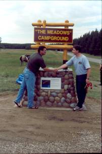
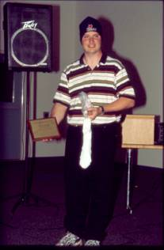
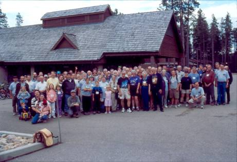

|

|
 |
Minister
Buckley Belanger congratulates
Vance Petriew at the
unveiling of the monument commemorating
the discovery of P/2001Q2
Comet Petriew at SSSP
2001. The unveiling occurred
on Saturday afternoon at
SSSP 2002. |
SSSP 2002 - The Chairman's Report
SSSP 2002,
held August 9-11, was another great success. We had over 200 participants from all over western and northern
The daytime activities
started on Thursday evening with Early-bird Wienie Roast. Organized activities began on Friday night
with a "Bring-your-own Short Presentations", followed by a binocular walk and
all-night observing. Thanks go to Ron
Berard, Kevin Black, Les Dickson, Alan Dyer, Rick Huziak and John Leppert for
giving presentations on Friday evening. Saturday started with a swap table and an impromptu soccer game in the
Meadows organized by Sharon Hartridge. Saturday afternoon featured talks by Dr. Scott Wilson of the University
of Regina Biology Department and by Lorne Harasen, also of
The evening activities started with a delicious
roast beef buffet dinner put on the Resort. The dinner included a whimsical dessert presentation that laid out
desserts on a table in the form of the Big Dipper. Vance Petriew, discoverer of the comet P/2001Q2
Petriew at last year's
star party, was our featured Fr. Lucien Kemble Memorial Lecturer this
year. He gave us a fascinating
multimedia overview of this comet discovery and an insider's view of the media
storm that erupted from that discovery. Petriew was the first person in
As a
fitting tribute to Vance's discovery, a special marker and sign erected at the
entrance to the Meadows campground was unveiled at a special ceremony Saturday
afternoon. The stone marker, with its
wooden sign, had attached to it a plaque describing the comet discovery. The ceremony, organized by Lorne Harasen of
the Regina Centre who served as Master-of-Ceremonies, was attended by the
Saskatchewan Minister of the Environment the Hon. Buckley Belenger, Park
Manager Brad Mason, President of the Regional Parks Committee John Froese, SSSP
Chairman Les Dickson, and Vance Petriew with wife Jennifer, daughter Emily, and
Vance's parents from
The skies
did not always co-operate. I rated the
sky on Friday night to be 7 or 8 on a scale of 1-10. Saturday night, unfortunately, Mother Nature
provided little more than sucker holes to peer through. Sunday night was probably the best of the
three nights; it rated an 8 or 9. I
think everyone got about 2 or 3 hours of viewing each night.
As Chairman of this year's SSSP, I
would like to thank all of those from the Saskatoon Centre who gave of their
time and effort to make this event a success: Ellen Dickson, Sandy Ferguson,
Barb Young, Jim Young, Darryl Chatfield, Bob Christie, Al Hartridge, Graham
Hartridge, Sharon Hartridge, Brian Friesen, Debbie Anderson, Bill Hydomako,
Rick Huziak, George Charpentier, and Tyrone Klassen. Thanks to the Regina Centre for doing the
T-shirts and golf shirts and running the two public star nights. A special thanks to Lorne Harasen for
lobbying the
Les Dickson,
Chairman, SSSP 2002.
For another
perspective on SSSP 2002, we provide links to two articles by Tom Pierson of
the Maple Creek News (used with
permission).